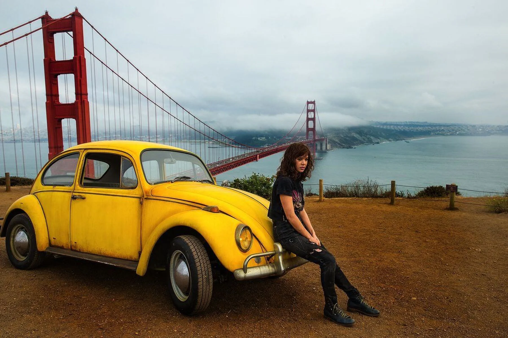

Bumblebee

Desde o nascimento de The Transformers em 1984 que Bumblebee é um favorito dos fãs. Ele sempre foi visto como um dos Autobots mais fracos, mas definitivamente o mais generoso e corajoso do grupo. Por isso, Bumblebee foi sempre admirado não só por seus companheiros mas também pelos humanos.
Na série original, Bumblebee era na verdade um Volkswagen Beetle, conhecido como Bug, e suas cores eram amarelas e pretas. Além disso, as portas do carro formavam asas quando abertas. Foi por essas razões que o Autobot ganhou o nome Bumblebee (zangão em português). À medida que o tempo foi passando, a forma de Bumblebee foi alterada para outros tipos de carros, mas o nome ficou para sempre.
O modelo mais icônico de Bumblebee é seu original, o pequeno Volkswagen Beetle amarelo. Isso era evocativo de sua personalidade, sempre tentando ser mais do que aquilo que aparentavam seus limites físicos.Hoje em dia, graças aos filmes de Michael Bay, ele é conhecido como um moderno Chevrolet Camaro. Segundo Bay, este não queria repetir o modelo Beetle devido à popularidade do filme Herbie, Meu Fusca Turbinado.
Mas pelo meio desses dois modelos, Bumblebee teve pelo menos outros seis:
- Suzuki Swift Sport, na linha de brinquedos japonesa Transformers: Alternity;
- AMC Pacer, durante a HQ crossover dos anos 70 G.I. Joe vs. The Transformers;
- Carro policial Supermini, na série Transformers Animated;
- Chrysler MR 412, na linha de brinquedos Timelines Deluxe Goldbug;
- Urbana 500, na série animada Transformers: Prime.
Durante os anos 80, a série original acabou e a Hasbro decidiu introduzir uma nova linha de Transformers chamada The Pretenders.De acordo com esse arco, os Decepticons desenvolveram uma tecnologia de armadura orgânica, mas os Autobots conseguiram a pegar secretamente, criando suas próprias carapaças humanas. Enquanto estivessem dentro dessa armaduras, os robôs conseguiam se esconder mais facilmente e até se auto-reparar.Bumblebee foi um dos Autobots que ganhou uma dessas carapaças e com ela participou em diversas aventuras em forma humanoide.